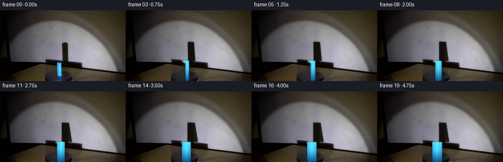
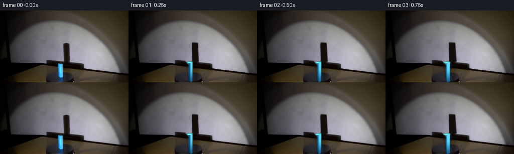
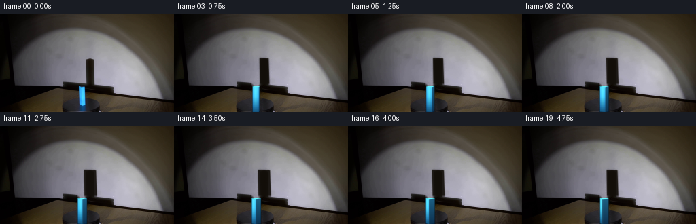
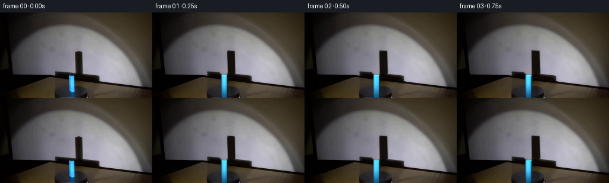

CODING AGENTS AS PIXEL WORLD MODELS
traex/DeepSeek-V4.1-Flash · 0075
点击播放 · 原生 RGB 像素
逐轮保存的候选
回放视频、检查图与代码变化。
每份候选均可单独播放。实际图片检查记录在下方工具轨迹中。
候选 01播放与检查图
点击播放 · 原生 RGB 像素


展开代码变化
--- 上一保存版本
+++ 本次保存版本
@@ -0,0 +1,278 @@
+from pathlib import Path
+
+import cv2
+import numpy as np
+from PIL import Image
+
+import artifact_io
+
+
+ROOT = Path(__file__).resolve().parent
+W, H = 256, 144
+N, FPS = 20, 4
+SS = 4
+RNG = np.random.default_rng(75)
+
+
+def _soft_mask(mask, sigma):
+ return cv2.GaussianBlur(mask.astype(np.float32), (0, 0), sigma)
+
+
+def _interpolate_across(image, x0, x1, y0, y1, pad=5):
+ """Recover a smooth vertical wall behind a narrow foreground shadow."""
+ out = image.copy()
+ for y in range(y0, y1 + 1):
+ left = np.median(image[y, max(0, x0 - pad):x0].astype(np.float32), axis=0)
+ right = np.median(image[y, x1 + 1:x1 + 1 + pad].astype(np.float32), axis=0)
+ blend = np.linspace(0.0, 1.0, x1 - x0 + 1, dtype=np.float32)[:, None]
+ out[y, x0:x1 + 1] = np.rint(left * (1.0 - blend) + right * blend).astype(np.uint8)
+ return out
+
+
+def build_background(source):
+ """Remove the original moving elements while retaining the stage lighting."""
+ bg = source.copy()
+
+ # The tall cast shadow is a narrow strip. Interpolating across it preserves
+ # the wall's broad horizontal lighting gradient better than generic inpaint.
+ bg = _interpolate_across(bg, 126, 139, 65, 103, pad=6)
+ shadow_feather = np.zeros((H, W), np.float32)
+ cv2.rectangle(shadow_feather, (124, 63), (141, 105), 1.0, -1)
+ shadow_feather = _soft_mask(shadow_feather, 1.15)
+ bg = np.rint(bg.astype(np.float32) * (1.0 - shadow_feather[..., None]) +
+ source.astype(np.float32) * shadow_feather[..., None]).astype(np.uint8)
+
+ # Fill the block footprint from its immediate floor surroundings.
+ block_mask = np.zeros((H, W), np.uint8)
+ cv2.rectangle(block_mask, (113, 101), (129, H - 1), 255, -1)
+ bg = cv2.inpaint(bg, block_mask, 3, cv2.INPAINT_TELEA)
+
+ # A restrained grain match keeps the reconstructed patches from looking
+ # conspicuously smoother than the filmed stage.
+ yy, xx = np.mgrid[0:H, 0:W]
+ grain = RNG.normal(0.0, 1.55, (H, W, 1)).repeat(3, axis=2)
+ grain += RNG.normal(0.0, 0.55, (H, W, 3))
+ patch = ((xx >= 122) & (xx <= 143) & (yy >= 62) & (yy <= 107)) | \
+ ((xx >= 110) & (xx <= 132) & (yy >= 99))
+ bg = np.clip(bg.astype(np.float32) + grain * patch[..., None], 0, 255).astype(np.uint8)
+ return bg
+
+
+def cuboid_projection(theta, width, depth, height, cx, base_y):
+ """Project an upright cuboid with a slightly elevated fixed camera."""
+ c, s = np.cos(theta), np.sin(theta)
+ pitch = np.deg2rad(9.0)
+ cp, sp = np.cos(pitch), np.sin(pitch)
+ half_w, half_d, half_h = width / 2.0, depth / 2.0, height / 2.0
+
+ def project(x, y, z):
+ xr = x * c + z * s
+ zr = -x * s + z * c
+ sx = cx + xr
+ sy = base_y - (y + half_h) * cp - zr * sp
+ return np.array([sx, sy], dtype=np.float32)
+
+ vertices = {
+ "nbl": project(-half_w, -half_h, -half_d),
+ "nbr": project(half_w, -half_h, -half_d),
+ "ntl": project(-half_w, half_h, -half_d),
+ "ntr": project(half_w, half_h, -half_d),
+ "fbl": project(-half_w, -half_h, half_d),
+ "fbr": project(half_w, -half_h, half_d),
+ "ftl": project(-half_w, half_h, half_d),
+ "ftr": project(half_w, half_h, half_d),
+ }
+
+ faces = []
+ if -s <= 0.0: # face normal -X points toward camera
+ faces.append(("left", [vertices[k] for k in ("nbl", "ntl", "ftl", "fbl")], 0.68))
+ if s <= 0.0: # face normal +X points toward camera
+ faces.append(("right", [vertices[k] for k in ("nbr", "ntr", "ftr", "fbr")], 0.68))
+ if c >= 0.0: # face normal -Z points toward camera
+ faces.append(("front", [vertices[k] for k in ("nbl", "ntl", "ntr", "nbr")], 1.0))
+ else: # back face
+ faces.append(("back", [vertices[k] for k in ("fbl", "ftl", "ftr", "fbr")], 0.62))
+ faces.append(("top", [vertices[k] for k in ("ntl", "ntr", "ftr", "ftl")], 1.18))
+
+ # Painter order: side/back, front, then the small top cap.
+ order = {"back": 0, "left": 1, "right": 1, "front": 2, "top": 3}
+ faces.sort(key=lambda item: order[item[0]])
+ return faces
+
+
+def _face_gradient(shape, face_name, light):
+ h, w = shape
+ yy, xx = np.mgrid[0:h, 0:w].astype(np.float32)
+ yn = yy / max(1.0, h - 1.0)
+ xn = xx / max(1.0, w - 1.0)
+
+ if face_name in ("front", "back"):
+ top = np.array([80, 211, 252], np.float32)
+ middle = np.array([57, 184, 249], np.float32)
+ bottom = np.array([27, 113, 174], np.float32)
+ t = np.clip(yn * 1.22, 0, 1)
+ midmix = np.clip(t * 2.0, 0, 1)[..., None]
+ color = top * (1 - midmix) + middle * midmix
+ lowmix = np.clip((t - 0.52) / 0.48, 0, 1)[..., None]
+ color = color * (1 - lowmix) + bottom * lowmix
+ spec = np.exp(-((xn - 0.47) / 0.19) ** 2 - ((yn - 0.36) / 0.48) ** 2)
+ color += spec[..., None] * np.array([22, 39, 7], np.float32)
+ edge = np.minimum(xn, 1.0 - xn)
+ color *= (0.78 + 0.22 * np.clip(edge / 0.18, 0, 1))[..., None]
+ else:
+ top = np.array([44, 145, 198], np.float32)
+ bottom = np.array([18, 73, 119], np.float32)
+ color = top * (1 - yn[..., None]) + bottom * yn[..., None]
+ rim = np.exp(-((xn - 0.12) / 0.13) ** 2)
+ color += rim[..., None] * np.array([16, 26, 18], np.float32)
+
+ if face_name == "top":
+ color = np.empty((h, w, 3), np.float32)
+ color[:] = np.array([91, 221, 251], np.float32)
+ color *= (0.90 + 0.10 * (1.0 - yn[..., None]))
+
+ color *= light
+ return np.clip(color, 0, 255)
+
+
+def render_cuboid(frame, theta):
+ width, depth, height = 20.0, 8.0, 40.0
+ cx, base_y = 121.5, 143.5
+ faces = cuboid_projection(theta, width, depth, height, cx, base_y)
+
+ canvas = frame.astype(np.float32)
+ all_pts = []
+ for face_index, (name, points, light) in enumerate(faces):
+ points = np.asarray(points, np.float32)
+ pts = np.rint(points * SS).astype(np.int32)
+ x0 = max(0, int(np.floor(points[:, 0].min())) - 2)
+ x1 = min(W, int(np.ceil(points[:, 0].max())) + 3)
+ y0 = max(0, int(np.floor(points[:, 1].min())) - 2)
+ y1 = min(H, int(np.ceil(points[:, 1].max())) + 3)
+ if x0 >= x1 or y0 >= y1:
+ continue
+
+ local = pts - np.array([x0 * SS, y0 * SS], np.int32)
+ mask_hi = np.zeros(((y1 - y0) * SS, (x1 - x0) * SS), np.uint8)
+ cv2.fillPoly(mask_hi, [local], 255, lineType=cv2.LINE_AA)
+ alpha = cv2.resize(mask_hi, (x1 - x0, y1 - y0), interpolation=cv2.INTER_AREA)
+ alpha = alpha.astype(np.float32) / 255.0
+ color = _face_gradient(alpha.shape, name, light)
+
+ # Vertical edge highlights and a subdued bottom contact falloff.
+ yy = np.arange(y0, y1, dtype=np.float32)[:, None]
+ if name in ("front", "back"):
+ contact = np.clip((yy - 135.0) / 9.0, 0, 1) * 0.30
+ color *= (1.0 - contact[..., None])
+
+ region = canvas[y0:y1, x0:x1]
+ region[:] = region * (1.0 - alpha[..., None]) + color * alpha[..., None]
+ all_pts.extend(points.tolist())
+
+ # A fine dark edge reads as the bevel visible in the source render.
+ pts = np.rint(np.array(all_pts) * SS).astype(np.int32)
+ hull = cv2.convexHull(pts)
+ edge_hi = np.zeros((H * SS, W * SS), np.uint8)
+ cv2.polylines(edge_hi, [hull], True, 255, max(1, SS // 2), cv2.LINE_AA)
+ edge = cv2.resize(edge_hi, (W, H), interpolation=cv2.INTER_AREA).astype(np.float32) / 255.0
+ canvas *= (1.0 - 0.36 * edge[..., None])
+ return np.clip(canvas, 0, 255).astype(np.uint8)
+
+
+def projected_width(theta):
+ return 20.0 * abs(np.cos(theta)) + 8.0 * abs(np.sin(theta))
+
+
+def render_wall_shadow(frame, theta):
+ width = projected_width(theta)
+ expansion = max(0.0, width - 10.5)
+ top_y = 64.5 - 0.10 * expansion
+ bottom_y = 103.5
+ left_top = 127.0 - 0.12 * expansion
+ right_top = 137.6 + 0.26 * expansion
+ left_bottom = 127.8 - 0.20 * expansion
+ right_bottom = 138.8 + 0.73 * expansion
+
+ poly = np.array([
+ [left_top, top_y],
+ [right_top, top_y + 0.7],
+ [right_bottom, bottom_y],
+ [left_bottom, bottom_y - 0.3],
+ ], np.float32)
+
+ hi = np.zeros((H * SS, W * SS), np.uint8)
+ cv2.fillPoly(hi, [np.rint(poly * SS).astype(np.int32)], 255, lineType=cv2.LINE_AA)
+ core = cv2.resize(hi, (W, H), interpolation=cv2.INTER_AREA).astype(np.float32) / 255.0
+ penumbra = cv2.GaussianBlur(core, (0, 0), 1.3)
+ core = cv2.GaussianBlur(core, (0, 0), 0.55)
+ shadow_alpha = np.clip(core * 0.88 + penumbra * 0.18, 0, 0.92)
+
+ canvas = frame.astype(np.float32)
+ tint = np.array([18, 14, 9], np.float32)
+ wall = canvas * (1.0 - shadow_alpha[..., None]) + tint * shadow_alpha[..., None]
+
+ # Keep the floor below the wall from receiving the vertical wall shadow.
+ yy = np.arange(H, dtype=np.float32)[:, None]
+ floor_weight = np.clip((yy - 101.0) / 5.0, 0, 1)
+ canvas = wall * (1.0 - floor_weight[..., None]) + canvas * floor_weight[..., None]
+ return np.clip(canvas, 0, 255).astype(np.uint8)
+
+
+def render_platform_motion(frame, u):
+ """Add restrained turntable cues without disturbing the source lighting."""
+ canvas = frame.astype(np.float32)
+ yy, xx = np.mgrid[0:H, 0:W].astype(np.float32)
+ cx, cy = 121.5, 147.0
+ angle = np.deg2rad(-72.0 + 78.0 * u)
+ dx, dy = xx - cx, yy - cy
+ radius = np.sqrt(dx * dx + dy * dy)
+ phi = np.arctan2(dy, dx)
+ region = (yy > 134.0) & (xx > 68.0) & (xx < 178.0)
+ rim = np.exp(-((radius - 29.0) / 2.2) ** 2)
+ glint = np.clip(np.cos(phi - angle), 0, 1) ** 12
+ weight = region.astype(np.float32) * rim * glint * 0.075
+ canvas += weight[..., None] * np.array([25, 18, 9], np.float32)
+
+ # Small contact shadow beneath the rotating block.
+ contact = np.zeros((H, W), np.float32)
+ cv2.ellipse(contact, (122, 143), (14, 3), 0, 0, 360, 1.0, -1)
+ contact = cv2.GaussianBlur(contact, (0, 0), 1.1)
+ canvas *= (1.0 - 0.22 * contact[..., None])
+ return np.clip(canvas, 0, 255).astype(np.uint8)
+
+
+def generate():
+ source = np.asarray(Image.open(ROOT / "first_frame.png").convert("RGB"))
+ assert source.shape == (H, W, 3)
+ background = build_background(source)
+
+ frames = []
+ for index in range(N):
+ u = index / (N - 1)
+ theta = np.deg2rad(-82.0 + 75.0 * u)
+ frame = background.copy()
+ frame = render_wall_shadow(frame, theta)
+ frame = render_platform_motion(frame, u)
+ frame = render_cuboid(frame, theta)
+ frames.append(frame)
+
+ frames[0] = source.copy()
+ return np.stack(frames)
+
+
+if __name__ == "__main__":
+ frames = generate()
+ artifact_io.save(frames, ROOT)
+
+ # A direct MP4 is useful for inspection; the canonical artifacts are the
+ # lossless PNG/PNPZ sequence and the generated HTML player.
+ writer = cv2.VideoWriter(
+ str(ROOT / "video.mp4"),
+ cv2.VideoWriter_fourcc(*"mp4v"),
+ FPS,
+ (W, H),
+ )
+ if writer.isOpened():
+ for frame in frames:
+ writer.write(cv2.cvtColor(frame, cv2.COLOR_RGB2BGR))
+ writer.release()
候选 02播放与检查图
点击播放 · 原生 RGB 像素


展开代码变化
--- 上一保存版本
+++ 本次保存版本
@@ -84,9 +84,9 @@
}
faces = []
- if -s <= 0.0: # face normal -X points toward camera
+ if s <= 0.0: # face normal -X points toward camera
faces.append(("left", [vertices[k] for k in ("nbl", "ntl", "ftl", "fbl")], 0.68))
- if s <= 0.0: # face normal +X points toward camera
+ if s >= 0.0: # face normal +X points toward camera
faces.append(("right", [vertices[k] for k in ("nbr", "ntr", "ftr", "fbr")], 0.68))
if c >= 0.0: # face normal -Z points toward camera
faces.append(("front", [vertices[k] for k in ("nbl", "ntl", "ntr", "nbr")], 1.0))
@@ -136,8 +136,8 @@
def render_cuboid(frame, theta):
- width, depth, height = 20.0, 8.0, 40.0
- cx, base_y = 121.5, 143.5
+ width, depth, height = 9.0, 10.0, 38.0
+ cx, base_y = 121.0, 143.5
faces = cuboid_projection(theta, width, depth, height, cx, base_y)
canvas = frame.astype(np.float32)
@@ -180,18 +180,18 @@
def projected_width(theta):
- return 20.0 * abs(np.cos(theta)) + 8.0 * abs(np.sin(theta))
+ return 9.0 * abs(np.cos(theta)) + 10.0 * abs(np.sin(theta))
def render_wall_shadow(frame, theta):
width = projected_width(theta)
- expansion = max(0.0, width - 10.5)
+ expansion = max(0.0, width - 9.0)
top_y = 64.5 - 0.10 * expansion
- bottom_y = 103.5
- left_top = 127.0 - 0.12 * expansion
- right_top = 137.6 + 0.26 * expansion
- left_bottom = 127.8 - 0.20 * expansion
- right_bottom = 138.8 + 0.73 * expansion
+ bottom_y = 103.8
+ left_top = 127.0 - 0.76 * expansion
+ right_top = 137.7 + 0.76 * expansion
+ left_bottom = 127.8 - 0.82 * expansion
+ right_bottom = 138.7 + 0.82 * expansion
poly = np.array([
[left_top, top_y],
@@ -230,14 +230,14 @@
region = (yy > 134.0) & (xx > 68.0) & (xx < 178.0)
rim = np.exp(-((radius - 29.0) / 2.2) ** 2)
glint = np.clip(np.cos(phi - angle), 0, 1) ** 12
- weight = region.astype(np.float32) * rim * glint * 0.075
+ weight = region.astype(np.float32) * rim * glint * 0.045
canvas += weight[..., None] * np.array([25, 18, 9], np.float32)
# Small contact shadow beneath the rotating block.
contact = np.zeros((H, W), np.float32)
cv2.ellipse(contact, (122, 143), (14, 3), 0, 0, 360, 1.0, -1)
contact = cv2.GaussianBlur(contact, (0, 0), 1.1)
- canvas *= (1.0 - 0.22 * contact[..., None])
+ canvas *= (1.0 - 0.13 * contact[..., None])
return np.clip(canvas, 0, 255).astype(np.uint8)
@@ -249,7 +249,7 @@
frames = []
for index in range(N):
u = index / (N - 1)
- theta = np.deg2rad(-82.0 + 75.0 * u)
+ theta = np.deg2rad(72.0 * u)
frame = background.copy()
frame = render_wall_shadow(frame, theta)
frame = render_platform_motion(frame, u)
可观测工具轨迹
实际执行的命令与返回图片。
命令 1exit 0
/bin/bash -c "pwd && rg --files -g '"'!*__pycache__*'"' | sed -n '1,200p'"
命令 2exit 0
/bin/bash -c "printf '%s\\n' '--- prompt.txt ---'; sed -n '1,240p' prompt.txt; printf '%s\\n' '--- GENERATION_RULES.md ---'; sed -n '1,280p' GENERATION_RULES.md"
命令 3exit 0
/bin/bash -c "find . -maxdepth 2 -type f -printf '%p\\t%s bytes\\n' | sort | sed -n '1,240p'; printf '%s\\n' '--- ffmpeg ---'; command -v ffmpeg || true; ffmpeg -version 2>/dev/null | head -n 3; printf '%s\\n' '--- python ---'; python3 - <<'PY'
import sys
print(sys.version)
for m in ['PIL','numpy','cv2','imageio','torch']:
try:
mod=__import__(m)
print(m, getattr(mod,'__version__','ok'))
except Exception as e:
print(m, 'MISSING', type(e).__name__)
PY"命令 4exit 0
/bin/bash -c "sed -n '1,260p' artifact_io.py"
命令 5exit 0
/bin/bash -c "sed -n '1,260p' player_template.html"
命令 6exit 0
/bin/bash -c "python3 - <<'PY'
from PIL import Image
import numpy as np
im=Image.open('first_frame.png').convert('RGB')
a=np.asarray(im)
print('size', im.size, 'mode', im.mode, 'shape',a.shape)
print('minmax',a.reshape(-1,3).min(0),a.reshape(-1,3).max(0),'mean',a.mean((0,1)))
# exact colors and counts
cols,cnts=np.unique(a.reshape(-1,3),axis=0,return_counts=True)
idx=np.argsort(cnts)[::-1]
print('unique',len(cols))
for i in idx[:40]: print(tuple(cols[i]),int(cnts[i]))
PY"命令 7exit 0
/bin/bash -c "python3 - <<'PY'
from PIL import Image
import numpy as np
from collections import Counter
im=Image.open('first_frame.png').convert('RGB'); a=np.array(im)
# print 64x36 semantic map based on HSV
import cv2
hsv=cv2.cvtColor(a,cv2.COLOR_RGB2HSV)
H,S,V=hsv[:,:,0],hsv[:,:,1],hsv[:,:,2]
# downsample representative mode-ish blocks
for y in range(0,144,4):
row=''
for x in range(0,256,4):
hh=hsv[y:y+4,x:x+4]
h,s,v=np.median(hh.reshape(-1,3),axis=0)
if s>120 and 90<=h<=140 and v>70: c='B'
elif s>100 and (h<20 or h>170) and v>60: c='R'
elif s>80 and 20<=h<90 and v>50: c='Y'
elif v<18: c=' '
elif v<38: c='.'
elif v<70: c=':'
elif v<110: c='o'
elif v<160: c='O'
else: c='#'
row+=c
print(f'{y:03d} {row}')
print('HSV ranges blue', H[(S>100)&(H>90)&(H<140)].min(),H[(S>100)&(H>90)&(H<140)].max(), 'count',((S>100)&(H>90)&(H<140)).sum())
ys,xs=np.where((S>100)&(H>90)&(H<140)&(V>50))
print('blue bbox', xs.min(),ys.min(),xs.max(),ys.max(), 'centroid', xs.mean(),ys.mean())
PY"命令 8exit 0
/bin/bash -c "python3 - <<'PY'
from PIL import Image
import numpy as np, cv2
im=Image.open('first_frame.png').convert('RGB'); a=np.array(im)
hsv=cv2.cvtColor(a,cv2.COLOR_RGB2HSV); H,S,V=[hsv[:,:,i] for i in range(3)]
# classify at 2x2 blocks by center/median
chars=[]
for y in range(0,144,3):
row=''
for x in range(0,256,2):
hh=hsv[y:min(y+3,144),x:min(x+2,256)].reshape(-1,3)
h,s,v=np.median(hh,axis=0)
if s>90 and 88<=h<=142 and v>45: c='B'
elif s>110 and (h<15 or h>165) and v>45: c='R'
elif s>90 and 15<=h<88 and v>45: c='Y'
elif v<10: c=' '
elif v<25: c='.'
elif v<45: c=':'
elif v<70: c='o'
elif v<100: c='O'
elif v<145: c='G'
else: c='#'
row+=c
print(f'{y:03d} {row}')
PY"命令 9exit 0
/bin/bash -c "python3 - <<'PY'
from PIL import Image
import numpy as np, cv2
im=Image.open('first_frame.png').convert('RGB'); a=np.array(im)
# sample rows as block averages, RGB triplets every 16 px
for y in [0,12,24,36,48,60,72,84,96,104,112,120,128,136,143]:
print('y=',y)
for x in range(0,256,16):
c=a[y:min(y+8,144),x:min(x+16,256)].reshape(-1,3).mean(0).round().astype(int)
print(f'{x:3}:{c[0]:3},{c[1]:3},{c[2]:3}',end=' ')
print()
PY"命令 10exit 0
/bin/bash -c "python3 - <<'PY'
from PIL import Image
import numpy as np, cv2
A=np.array(Image.open('first_frame.png').convert('RGB'))
# print crop x80-190 y88-143 as 1-char classes every pixel, compress 2x2
hsv=cv2.cvtColor(A,cv2.COLOR_RGB2HSV); H,S,V=[hsv[:,:,i] for i in range(3)]
print(' '+''.join(str((x//10)%10) for x in range(80,190,2)))
print(' '+''.join(str((x//1)%10) for x in range(80,190,2)))
for y in range(88,144,2):
row=''
for x in range(80,190,2):
h,s,v=np.median(hsv[y:min(y+2,144),x:min(x+2,190)].reshape(-1,3),axis=0)
if s>90 and 88<=h<=142 and v>40: c='B'
elif s>100 and (h<18 or h>165) and v>40: c='R'
elif s>80 and 18<=h<88 and v>40: c='Y'
elif v<8:c=' '
elif v<18:c='.'
elif v<35:c=':'
elif v<60:c='o'
elif v<90:c='O'
elif v<130:c='G'
elif v<170:c='#'
else:c='@'
row+=c
print(f'{y:03d} {row}')
PY"命令 11exit 0
/bin/bash -c "python3 - <<'PY'
from PIL import Image
import numpy as np, cv2
A=np.array(Image.open('first_frame.png').convert('RGB'))
hsv=cv2.cvtColor(A,cv2.COLOR_RGB2HSV); H,S,V=[hsv[:,:,i] for i in range(3)]
blue=(S>85)&(H>=90)&(H<=145)&(V>30)
for y in range(100,144):
xs=np.where(blue[y])[0]
if len(xs):
# contiguous ranges
d=np.diff(xs); cuts=np.r_[0,np.where(d>1)[0]+1,len(xs)]
print(y, [(int(xs[cuts[i]]),int(xs[cuts[i+1]-1])) for i in range(len(cuts)-1)])
PY"命令 12exit 0
/bin/bash -c "python3 - <<'PY'
from PIL import Image
import numpy as np
A=np.array(Image.open('first_frame.png').convert('RGB'))
for y in [103,104,105,106,108,110,112,115,118,120,124,128,132,136,140,142,143]:
print('\\ny',y)
for x in range(108,136):
c=A[y,x]
print(f'{x}:{c[0]:02x}{c[1]:02x}{c[2]:02x}',end=' ')
print()
PY"命令 13exit 0
/bin/bash -c "python3 - <<'PY'
from PIL import Image
import numpy as np, cv2
A=np.array(Image.open('first_frame.png').convert('RGB'))
# save enlarged nearest frame for internal visual analysis only
Image.fromarray(A).resize((1024,576),Image.Resampling.NEAREST).save('.tmp/first_nearest.png')
# grayscale edge and labels? print dimensions & image structure via projections
G=cv2.cvtColor(A,cv2.COLOR_RGB2GRAY)
print('bright rows mean', [(y,round(float(G[y].mean()),1)) for y in range(0,144,8)])
print('bright cols mean', [(x,round(float(G[:,x].mean()),1)) for x in range(0,256,8)])
# identify white wall x range by high brightness at y=70
for y in [0,20,40,60,80,96,104,112]:
xs=np.where(G[y]>120)[0]
print(y, (xs.min(),xs.max(),len(xs)) if len(xs) else None)
PY"命令 14exit 0
/bin/bash -c "python3 - <<'PY'
from PIL import Image
import numpy as np
A=np.array(Image.open('first_frame.png').convert('RGB'))
# infer background outside moving object; calculate differences along y in small crops
for x in [90,100,110,130,140,150,170,190,210,230]:
print('x',x, [(y, tuple(A[y,x])) for y in range(0,144,16)])
PY"命令 15exit 0
/bin/bash -c "python3 - <<'PY'
from PIL import Image
import numpy as np
A=np.array(Image.open('first_frame.png').convert('RGB'))
# map horizontal changes at key rows, average adjacent 4 px to identify edges
for y in [20,24,28,32,36,40,44,48,52,56,60,64,68,72,76,80,84,88,92,96,100,104,108,112,116,120,124,128,132,136,140]:
row=A[y].astype(float).mean(1)
d=np.abs(np.diff(row))
peaks=np.where(d>20)[0]
# group
groups=[]
for p in peaks:
if not groups or p-groups[-1][-1]>2: groups.append([p])
else: groups[-1].append(p)
print(y, [(g[0],g[-1],round(float(d[g].max()),0)) for g in groups[:12]])
PY"命令 16exit 0
/bin/bash -c "python3 - <<'PY'
from PIL import Image
import numpy as np
A=np.array(Image.open('first_frame.png').convert('RGB'))
# compare symmetric points in wall region to infer vertical boundaries/floor horizon
for y in [0,8,16,24,32,40,48,56,64,72,80,88,96,100,104,108,112,116,120,124,128,132,136,140,143]:
print(y, tuple(A[y,80]), tuple(A[y,120]), tuple(A[y,160]), tuple(A[y,200]), tuple(A[y,240]))
PY"命令 17exit 0
/bin/bash -c "python3 - <<'PY'
from PIL import Image
import numpy as np, cv2
A=np.array(Image.open('first_frame.png').convert('RGB'))
g=cv2.cvtColor(A,cv2.COLOR_RGB2GRAY)
# print edge map of entire frame 4x4 ascii via sobel
e=cv2.Sobel(g,cv2.CV_32F,1,0,ksize=3)**2+cv2.Sobel(g,cv2.CV_32F,0,1,ksize=3)**2
for y in range(0,144,3):
row=''
for x in range(0,256,2):
m=e[y:min(y+3,144),x:min(x+2,256)].max()
if m>80000:c='#'
elif m>30000:c='O'
elif m>10000:c='o'
elif m>3000:c='.'
else:c=' '
row+=c
print(row)
PY"命令 18exit 0
/bin/bash -c "python3 - <<'PY'
from PIL import Image
import numpy as np
A=np.array(Image.open('first_frame.png').convert('RGB'))
for y in [60,62,64,66,68,70,72,74,76,78,80,82,84,86,88,90,92,94,96,98,100,102]:
# rgb samples around dark pillar x124-140
print(y, tuple(A[y,123]), tuple(A[y,126]),tuple(A[y,130]),tuple(A[y,135]),tuple(A[y,138]),tuple(A[y,141]))
PY"命令 19exit 0
/bin/bash -c "python3 - <<'PY'
from PIL import Image
import numpy as np
A=np.array(Image.open('first_frame.png').convert('RGB'))
# luminance 0-255 blocks 8x8 char maps with row labels
G=A.mean(2)
for y in range(0,144,4):
row=''
for x in range(0,256,4):
v=G[y:y+4,x:x+4].mean()
c=' .:-=+*#%@'[min(9,int(v/256*10))]
row+=c
print(f'{y:03d} {row}')
PY"命令 20exit 0
/bin/bash -c "python3 - <<'PY'
from PIL import Image
import numpy as np
A=np.array(Image.open('first_frame.png').convert('RGB'))
# identify large smooth background areas and shadows; inspect HSV stats at relevant polygons
import cv2
hsv=cv2.cvtColor(A,cv2.COLOR_RGB2HSV)
for name,sl in [('wall',(slice(40,100),slice(90,120))),('shadow',(slice(70,100),slice(127,137))),('floor',(slice(125,143),slice(30,90))),('spot',(slice(120,143),slice(145,210))),('obj',(slice(108,135),slice(117,125)) )]:
b=hsv[sl].reshape(-1,3)
print(name,'H',np.percentile(b[:,0],[5,25,50,75,95]),'S',np.percentile(b[:,1],[5,25,50,75,95]),'V',np.percentile(b[:,2],[5,25,50,75,95]),'rgb',A[sl].reshape(-1,3).mean(0))
PY"命令 21exit 0
/bin/bash -c "python3 - <<'PY'
from PIL import Image
import numpy as np
A=np.array(Image.open('first_frame.png').convert('RGB'))
# print x positions where color blue at y values
# blue threshold hue 90-140, sat > 120, val>100
import cv2
h=cv2.cvtColor(A,cv2.COLOR_RGB2HSV)
for y in range(100,144):
mask=(h[y,:,0]>=88)&(h[y,:,0]<=142)&(h[y,:,1]>110)&(h[y,:,2]>80)
xs=np.where(mask)[0]
if len(xs): print(y, xs.min(),xs.max(),len(xs))
PY"命令 22exit 0
/bin/bash -c "python3 - <<'PY'
from PIL import Image
import numpy as np
A=np.array(Image.open('first_frame.png').convert('RGB'))
# neighboring border around blue every few rows
for y in [105,106,108,112,116,120,124,128,132,136,140,143]:
print('y',y)
for x in range(112,130):
print(f'{x}:{A[y,x,0]:03},{A[y,x,1]:03},{A[y,x,2]:03}',end=' | ')
print()
PY"命令 23exit 0
/bin/bash -c "python3 - <<'PY'
from PIL import Image
import numpy as np
A=np.array(Image.open('first_frame.png').convert('RGB'))
# object body rows: print adjacent to object every 2 px around x100-150 to infer edges and shape
for y in [100,102,104,106,108,110,112,114,116,118,120,122,124,126,128,130,132,134,136,138,140,142]:
print(y, ' '.join(f'{x}:{A[y,x,0]//16:x}{A[y,x,1]//16:x}{A[y,x,2]//16:x}' for x in range(105,135)))
PY"命令 24exit 0
/bin/bash -c "python3 - <<'PY'
from PIL import Image
import numpy as np
A=np.array(Image.open('first_frame.png').convert('RGB'))
# Save only diagnostic crops with nearest scaling (allowed local image ops, no visual tool)
for name,box in [('object',(95,95,150,144)),('shadow',(115,55,150,110)),('spot',(80,95,256,144)),('full',(0,0,256,144))]:
crop=Image.fromarray(A[box[1]:box[3],box[0]:box[2]])
crop.resize((crop.width*8,crop.height*8),Image.Resampling.NEAREST).save(f'.tmp/{name}_crop.png')
print(name,crop.size)
PY"命令 25exit 0
/bin/bash -c "python3 - <<'PY'
from PIL import Image
import numpy as np
A=np.array(Image.open('first_frame.png').convert('RGB'))
# RGB edge strengths per channel, top peaks per row
for y in range(100,144,4):
for ch,name in [(A[y].mean(1),'rgb'),(A[y,:,0],'r'),(A[y,:,1],'g'),(A[y,:,2],'b')]:
d=np.abs(np.diff(ch.astype(float))); inds=np.argsort(d)[-4:][::-1]
print(y,name,[(int(i),int(d[i])) for i in inds])
print()
PY"命令 26exit 0
/bin/bash -c "python3 - <<'PY'
from PIL import Image
import numpy as np
A=np.array(Image.open('first_frame.png').convert('RGB'))
# RGB around shadow region: print relative luminance and chromaticity on grid x110-145, y55-108
for y in range(55,109,3):
row=''
for x in range(110,146,2):
p=A[y:y+3,x:x+2].mean((0,1)); v=p.mean()
c=' ' if v<15 else '.' if v<30 else ':' if v<50 else 'o' if v<80 else 'O' if v<120 else 'G' if v<155 else '#' if v<185 else '@'
row+=c
print(f'{y:03d} {row}')
print('x coords 110..144')
PY"命令 27exit 0
/bin/bash -c "python3 - <<'PY'
from PIL import Image
import numpy as np
A=np.array(Image.open('first_frame.png').convert('RGB'))
# inspect shadow polygon boundary more accurately using brightness vs expected smooth wall base
# show x profile at selected y in full and vertical profile at x
for y in [60,63,64,65,66,67,68,70,75,80,85,90,95,98,99,100,101,102,103,104,105,106,107]:
vals=A[y,:, :].mean(1)
# group ranges under 60 for x90:180
mask=(vals<60)
xs=np.where(mask[90:181])[0]+90
groups=[]
for x in xs:
if not groups or x-groups[-1][-1]>1:groups.append([x])
else:groups[-1].append(x)
print(y,[(g[0],g[-1]) for g in groups])
PY"命令 28exit 0
/bin/bash -c "python3 - <<'PY'
from PIL import Image
import numpy as np
A=np.array(Image.open('first_frame.png').convert('RGB'))
# print the first frame color at selected likely scene elements, and mask bounding boxes
# wall floor / block / platform / shadow / spotlight
for p in [(0,0),(100,50),(170,80),(120,60),(128,70),(133,80),(120,110),(121,130),(80,130),(160,130),(220,100),(200,50),(40,130),(240,140)]:
x,y=p; print(p,tuple(A[y,x]))
# estimate color regions via kmeans (local analysis only)
import cv2
Z=A.reshape(-1,3).astype(np.float32)
crit=(cv2.TERM_CRITERIA_EPS+cv2.TERM_CRITERIA_MAX_ITER,30,1)
_,lab,cent=cv2.kmeans(Z,12,None,crit,5,cv2.KMEANS_PP_CENTERS)
cnt=np.bincount(lab.ravel())
for i in np.argsort(cnt)[::-1]: print(i,cnt[i],cent[i].round(1))
PY"命令 29exit 1
/bin/bash -c 'python3 generate.py'
命令 30exit 0
/bin/bash -c 'python3 generate.py'
命令 31exit 0
/bin/bash -c "find . -maxdepth 2 -type f -printf '%p\\t%s bytes\\n' | sort | sed -n '1,240p'"
命令 32exit 0
/bin/bash -c "python3 - <<'PY'
from PIL import Image
import numpy as np, cv2, hashlib
A=np.array(Image.open('first_frame.png').convert('RGB'))
frames=[]
for i in range(20): frames.append(np.array(Image.open(f'frames/{i:02d}.png').convert('RGB')))
F=np.stack(frames)
print('shape',F.shape,'dtype',F.dtype)
print('frame0 exact',np.array_equal(A,F[0]),'hash src',hashlib.sha256(A.tobytes()).hexdigest()[:16],'hash out',hashlib.sha256(F[0].tobytes()).hexdigest()[:16])
print('frame diffs adjacent mean/max/changed px')
for i in range(1,20):
d=np.abs(F[i].astype(int)-F[i-1].astype(int))
print(i,round(float(d.mean()),3),int(d.max()),int((d.max(2)>2).sum()))
# blue bbox and shadow mean region per frame
for i in range(0,20,2):
im=F[i]; hsv=cv2.cvtColor(im,cv2.COLOR_RGB2HSV)
mask=(hsv[:,:,0]>85)&(hsv[:,:,0]<145)&(hsv[:,:,1]>100)&(hsv[:,:,2]>60)
ys,xs=np.where(mask)
print('f',i,'blue bbox', (int(xs.min()),int(ys.min()),int(xs.max()),int(ys.max()),int(len(xs))) if len(xs) else None,'shadowmean',np.round(im[70:100,126:141].mean((0,1)),1),'objmean',np.round(im[110:135,118:125].mean((0,1)),1))
print('mp4', end=' ')
cap=cv2.VideoCapture('video.mp4'); print(cap.get(cv2.CAP_PROP_FRAME_COUNT),cap.get(cv2.CAP_PROP_FPS),cap.get(cv2.CAP_PROP_FRAME_WIDTH),cap.get(cv2.CAP_PROP_FRAME_HEIGHT)); cap.release()
PY"命令 33exit 0
/bin/bash -c "python3 generate.py && python3 - <<'PY'
from PIL import Image
import numpy as np, cv2, hashlib
A=np.array(Image.open('first_frame.png').convert('RGB'))
F=np.stack([np.array(Image.open(f'frames/{i:02d}.png').convert('RGB')) for i in range(20)])
print('exact',np.array_equal(A,F[0]),'sha',hashlib.sha256(F[0].tobytes()).hexdigest()[:16])
for i in range(0,20,2):
im=F[i]; hsv=cv2.cvtColor(im,cv2.COLOR_RGB2HSV)
mask=(hsv[:,:,0]>85)&(hsv[:,:,0]<145)&(hsv[:,:,1]>100)&(hsv[:,:,2]>60)
ys,xs=np.where(mask)
print('f',i,'blue bbox', (int(xs.min()),int(ys.min()),int(xs.max()),int(ys.max()),int(len(xs))) if len(xs) else None,'shadow',np.round(im[70:100,126:141].mean((0,1)),1),'body',np.round(im[110:135,118:125].mean((0,1)),1))
PY"命令 34exit 0
/bin/bash -c "python3 - <<'PY'
from PIL import Image
import numpy as np
for idx in [0,1,5,10,15,19]:
A=np.array(Image.open(f'frames/{idx:02d}.png').convert('RGB'))
G=A.mean(2)
print('\\nFRAME',idx)
for y in range(52,144,4):
row=''
for x in range(88,224,2):
v=G[y:y+4,x:x+2].mean()
c=' .:-=+*#%@'[min(9,int(v/256*10))]
row+=c
print(f'{y:03d} {row}')
PY"命令 35exit 0
/bin/bash -c "python3 - <<'PY'
from PIL import Image
import numpy as np
A=np.array(Image.open('first_frame.png').convert('RGB')).astype(np.float32)
# background smoothness around reconstructed shadow: compare row medians before/after generated bg, not directly saved
import generate
bg=generate.build_background(A.astype(np.uint8)).astype(float)
for y in [64,65,66,68,72,80,90,96,100,102,103,104]:
print('y',y,'bg x120-145 mean',bg[y,120:146].mean(0).round(1),'src',A[y,120:146].mean(0).round(1))
# vertical smoothness bg x133
for x in [126,130,133,137,140]:
vals=bg[58:110,x].mean(1)
print('x',x,'jumps',np.round(np.abs(np.diff(vals)),1)[:20])
PY"命令 36exit 0
/bin/bash -c "python3 - <<'PY'
from PIL import Image
import numpy as np
F=np.stack([np.array(Image.open(f'frames/{i:02d}.png').convert('RGB')) for i in range(20)])
# wall shadow darkness center region; and bbox of dark pixels y65:100 x100:180
for i in range(20):
A=F[i]; g=A.mean(2)
mask=(g<50)
ys,xs=np.where(mask[60:106,100:180]); ys+=60;xs+=100
print(i, 'dark count',len(xs), 'bbox', (xs.min(),ys.min(),xs.max(),ys.max()) if len(xs) else None, 'center mean',A[75:95,129:136].mean().round(1))
PY"命令 37exit 0
/bin/bash -c "python3 - <<'PY'
from PIL import Image
import numpy as np
F=np.stack([np.array(Image.open(f'frames/{i:02d}.png').convert('RGB')) for i in range(20)])
for i in [0,1,2,5,10,15,19]:
A=F[i]; g=A.mean(2)
print('frame',i)
for y in [65,67,70,75,80,85,90,95,99,102]:
mask=g[y]<45; xs=np.where(mask[90:190])[0]+90
groups=[]
for x in xs:
if not groups or x-groups[-1][-1]>1:groups.append([x])
else:groups[-1].append(x)
print(y,[(g[0],g[-1]) for g in groups])
PY"命令 38exit 0
/bin/bash -c "python3 - <<'PY'
from PIL import Image
import numpy as np
A=np.array(Image.open('first_frame.png').convert('RGB'))
# print actual difference image first vs frame1; where big changes
F=np.array(Image.open('frames/01.png').convert('RGB'))
D=np.abs(A.astype(int)-F.astype(int)).max(2)
ys,xs=np.where(D>10)
print('n',len(xs),'bbox',xs.min(),ys.min(),xs.max(),ys.max())
# connected comps
import cv2
n,lab,stats,cent=cv2.connectedComponentsWithStats((D>10).astype('uint8'),8)
for s in sorted(stats[1:],key=lambda s:s[4],reverse=True)[:20]: print(s)
PY"命令 39exit 0
/bin/bash -c "python3 - <<'PY'
from PIL import Image
import numpy as np
A=np.array(Image.open('first_frame.png').convert('RGB'))
for i in [1,2,5,10,15,19]:
B=np.array(Image.open(f'frames/{i:02d}.png').convert('RGB'))
print('\\nframe',i)
for y in [65,70,80,90,100,105,110,115,120,125,130,135,140]:
# first difference thresholds on row from background
d=np.abs(A[y].astype(int)-B[y].astype(int)).max(1)
xs=np.where(d>5)[0]
groups=[]
for x in xs:
if not groups or x-groups[-1][-1]>1:groups.append([x])
else:groups[-1].append(x)
print(y,[(g[0],g[-1]) for g in groups[:12]])
PY"命令 40exit 0
/bin/bash -c "python3 - <<'PY'
from PIL import Image
import numpy as np
F=np.stack([np.array(Image.open(f'frames/{i:02d}.png').convert('RGB')) for i in range(20)])
# mean absolute change and exact unchanged counts in object/shadow ROIs across sequence
for i in [1,2,5,10,15,19]:
A=F[i]
print('f',i,'obj',A[105:144,110:134].mean((0,1)).round(1),'sh',A[65:104,123:143].mean((0,1)).round(1))
# adjacent diff map coarse
for i in range(1,20):
D=np.abs(F[i].astype(int)-F[i-1].astype(int)).max(2)
print(i, 'roi',round(float(D[60:144,105:150].mean()),2),'n>10',int((D>10).sum()),'n>50',int((D>50).sum()))
PY"命令 41exit 0
/bin/bash -c "python3 - <<'PY'
from PIL import Image
import numpy as np, hashlib, zipfile, json, re, cv2
from pathlib import Path
root=Path('.')
A=np.array(Image.open('first_frame.png').convert('RGB'))
files=sorted((root/'frames').glob('*.png'))
F=np.stack([np.array(Image.open(p).convert('RGB')) for p in files])
assert F.shape==(20,144,256,3) and F.dtype==np.uint8
assert np.array_equal(F[0],A)
with np.load('pixels.npz') as z:
p=z['pixels']; assert p.shape==(144,256,20)
recon=np.empty((20,144,256,3),np.uint8)
for i in range(20):
recon[i,:,:,0]=p[:,:,i]>>16; recon[i,:,:,1]=(p[:,:,i]>>8)&255; recon[i,:,:,2]=p[:,:,i]&255
assert np.array_equal(recon,F)
html=(root/'index.html').read_text()
assert 'window.__pixelReady=true' in html and 'DATA=' in html
m=re.search(r'const DATA=(\\{.*?\\}),W=DATA.width',html)
assert m
data=json.loads(m.group(1))
assert data['frames']==20 and data['width']==256 and data['height']==144 and data['fps']==4 and len(data['deltas'])==19
cap=cv2.VideoCapture('video.mp4'); assert cap.isOpened()
assert int(cap.get(cv2.CAP_PROP_FRAME_COUNT))==20
assert abs(cap.get(cv2.CAP_PROP_FPS)-4)<1e-6
assert (int(cap.get(cv2.CAP_PROP_FRAME_WIDTH)),int(cap.get(cv2.CAP_PROP_FRAME_HEIGHT)))==(256,144)
ret,vid=cap.read(); assert ret and vid.shape==(144,256,3); cap.release()
# Per-frame blue centroid motion is continuous and monotonic in x.
cent=[]
for f in F:
hsv=cv2.cvtColor(f,cv2.COLOR_RGB2HSV)
mask=(hsv[:,:,0]>=88)&(hsv[:,:,0]<=142)&(hsv[:,:,1]>110)&(hsv[:,:,2]>80)
y,x=np.where(mask); cent.append(float(x.mean()))
print('VALIDATION PASSED')
print('frame0 sha256',hashlib.sha256(A.tobytes()).hexdigest())
print('blue centroid x', [round(v,2) for v in cent])
print('total changed pixels by frame', [int((np.abs(F[i].astype(int)-A.astype(int)).max(2)>5).sum()) for i in range(20)])
print('artifacts', {k:root.joinpath(k).stat().st_size for k in ['generate.py','pixels.npz','index.html','video.mp4','inspection.png','transition_check.png']})
PY"命令 42exit 0
/bin/bash -c "python3 - <<'PY'
from PIL import Image
import numpy as np, cv2
F=np.stack([np.array(Image.open(f'frames/{i:02d}.png').convert('RGB')) for i in range(20)])
A=np.array(Image.open('first_frame.png').convert('RGB'))
for i in [1,5,10,15,19]:
D=np.abs(F[i].astype(int)-A.astype(int)).max(2)
n,l,s,c=cv2.connectedComponentsWithStats((D>8).astype('uint8'),8)
print('frame',i)
for x,y,w,h,area in sorted(s[1:],key=lambda q:q[4],reverse=True)[:8]:
print(' ',x,y,w,h,area)
PY"命令 43exit 0
/bin/bash -c 'git status --short 2>/dev/null || true; python3 -m py_compile generate.py; ls -lh frames/00.png frames/19.png pixels.npz index.html video.mp4 inspection.png'
保存候选 2 份；完成命令 43 次；可验证图片返回 0 张。原始 API 响应与完整日志保留在本地。